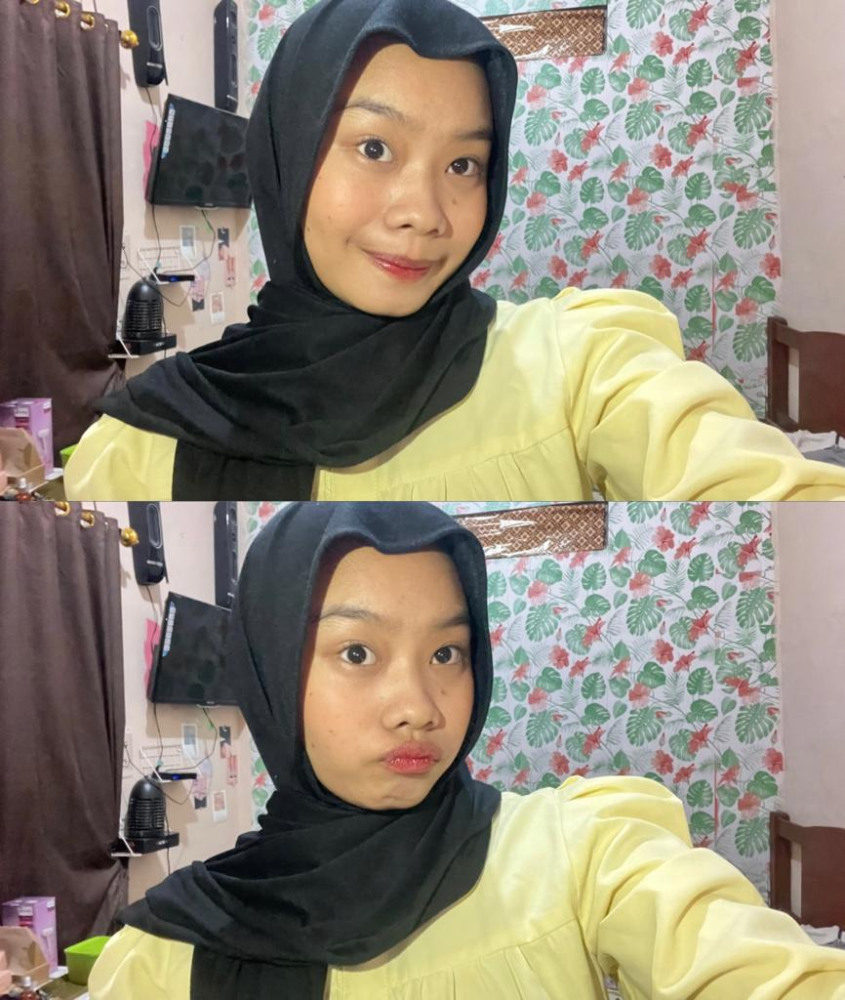

Nayla Salsabilla
| Nama | : | Nayla Salsabilla |
| NPM | : | 065123100 |
Mahasiswa semester 1 program studi Ilmu Komputer di Universitas Pakuan. memiliki hobi menonton film dan menonton drama korea. selain itu saya juga memiliki ketertarikan mendalam di bidang teknologi yang semakin berkembang. Hal tersebut menjadi alasan saya memilih Program Studi Ilmu Komputer di Universitas Pakuan.